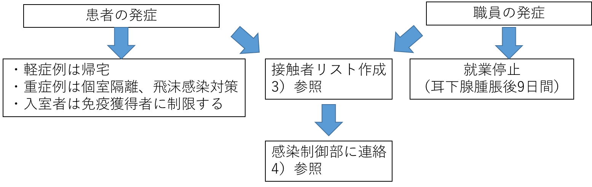

Ⅴ. 疾患別感染対策 6. 流行性耳下腺炎 (Mumps)
- 臨床
●潜伏期間：12～25日
●症状（図１）：前駆症状（食欲低下、筋痛、倦怠感、頭痛、微熱）が数日間先行し、38℃台の発熱と片側あるいは両側の耳下腺腫脹（図２）で発症する。約3日で解熱し、耳下腺腫脹は3～4日目にピークとなり、で回復する。耳痛や咀嚼痛を伴い、25％が片側性である。耳下腺腫脹を認めずウイルスを排泄する不顕性感染例が30～40％と多い。
●感染様式：唾液の飛沫感染（１ｍ以内）と接触感染
●感染期間：耳下腺腫脹出現の７日前から出現の９日後（多くは3日前～４日後）まで
●治 療：対症療法のみ
●合併症： 精巣-睾丸炎(成人の20～30%例)、卵巣炎(成人の5%例)、無菌性髄膜炎（3～10％例、予後良好）、脳炎（1/ 5000例：予後不良）、難聴（1/ 400例：回復しない）。また、低出生体重児の出生との関連は不明だが、妊婦への接触も注意を要する
- 院内感染対策
- 院内感染の予防策：平時からの職員（以下、職員とは、医師、看護師などの医療従事者のみならず実習生や事務員などの非医療従事者も含む）の免疫獲得。（ワクチンの項参照）
- 発症時の対応：
- 院内感染対策

職員・患者、付き添い者共に発症が疑われた時点で感染制御部（内線5093）に連絡し、小児科、感染症内科、総合診療科、または耳鼻咽喉科を受診させる。- 接触者リストの作成：
- 発症の７日前から発症者と密接な接触や近くで会話をした職員、患者、付き添い者などをリストアップし、2回以上のワクチン接種歴が明らかではない者、過去に抗体価の検査を行っていない者についてはすみやかに抗体価を測定する（詳細はワクチンの項を参照のこと）。
- 2回以上のワクチン接種歴がある、または抗体価が上昇しているものは接触者リストから除外する。
- 接触の程度をA：濃厚、B：中等度の2段階にランク分けし、状況に応じて対応を決定する。
ランクA（濃厚）： | 職員、患者、付き添い者等で発症者に直接触れた者、面と向かって5分以上会話をした者、1時間以上同室に居た者など。 |
ランクB（中等度）： | 発症者に直接触れていないが短時間の会話をした者。 |
接 触 者 の 範 囲
- 病棟での発生
入院患者、職員（医療者、派遣従業員）が発症した場合
ランクA、Bの職員ならびに入院患者
- 外来での発生
外来患者、職員（医療者、派遣従業員）が発症した場合
当該外来患者が受診した外来診察室、外来待合ロビー、採血室、レントゲン室などの検査フロアで接触したランクA、Bの職員ならびランクAの患者。
- 感染制御部への連絡方法
下記時間帯に応じた責任者が、職員ならびに患者の感染の既往およびワクチン歴を聴取し接触者リストを作成し、感染制御部（内線5093）、または事務当直（内線5038）に連絡し、感染制御部スタッフに連絡する。
平日８：３０～１７：００：病棟師長、病棟医長、リンクナース、リンクドクター
平日１７：００～ ８：３０：当該科当直医、病棟看護師リーダー
土曜、日曜、祝日：当該科当直医、病棟看護師リーダー
- 抗体価測定のための検体採取方法
発症者、接触者の血液を血清分離剤入り試験管（緑のゴム蓋）に採血し部署でまとめて、測定者リストとともに感染制御部へ提出する（成人5 ml、小児2 ml）。
- 接触者の対応（図３）：
- 接触後5日目から25日目までは無症候性にウイルスを排泄する可能性があり、接触した患者は可能であれば退院を検討する。患者は飛沫感染対策とし個室隔離とする。
- 曝露後検査で十分な抗体価が得られていない職員は、発症がない場合でも接触後5日目から25日目までは就業停止とする。
微熱や前駆症状があれば院内感染対策費で専門科を受診させる。
- 接触者の発症予防策（図３）：
- 既往歴がなく抗体陰性の接触者への、ワクチン緊急接種や免疫グロブリン投与の有効性は確認されていない。
＊ムンプスワクチン接種の有効性と副作用
- 接触後72時間以内の抗体陰性者で接種を希望する者には、ワクチンの接種も可能である。流行性耳下腺炎の場合、接触後のワクチン接種の効果は認められていない
- 妊婦、免疫抑制患者は禁忌である。
- 女性の場合接種後2ヶ月間は避妊を行う。
- 重篤な副作用として無菌性髄膜炎（1/12,000）、急性血小板減少性紫斑病（1/100万）、精巣炎（稀）などの副作用があることも充分説明する。